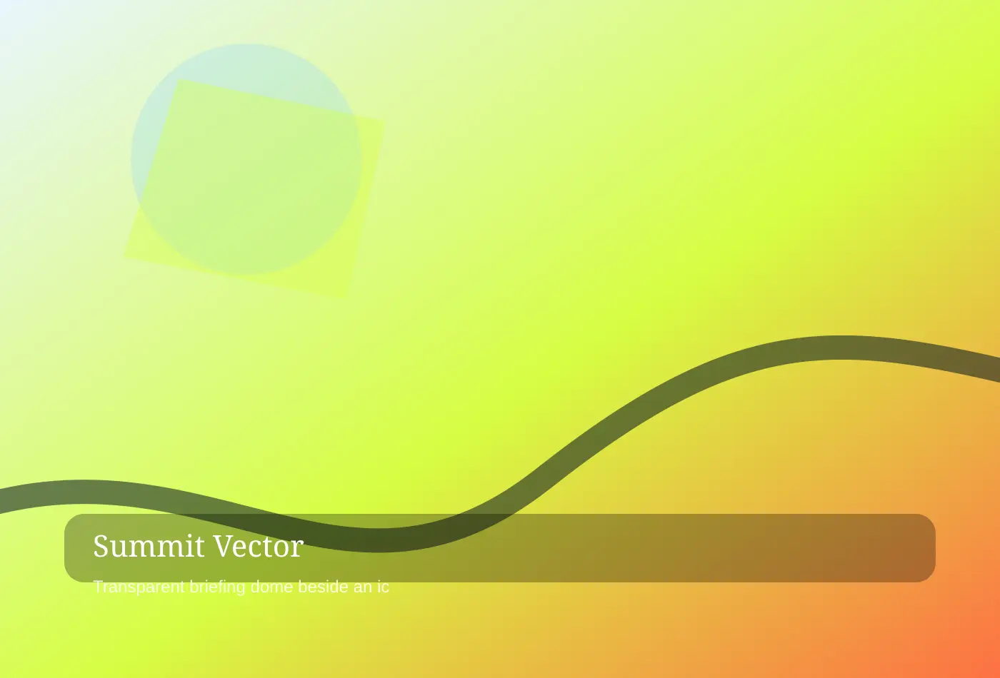

Field Leadership Simulations
For route intelligence desk, Summit Vector Expeditions shapes field leadership simulations through measured pacing and a process built for leadership teams, private clubs, venture.
ALPINE TECHNICAL ADVENTURE INTERFACE
Summit Vector Expeditions is a premium alpine technical adventure interface partner for leadership teams, private clubs, venture groups, and learning officers. Each commission is designed to feel specific, useful, and unmistakably owned by the people who live with it.
Start a conversation
alpine technical adventure interface
Summit Vector designs mountain experiences that feel expansive without becoming reckless. Every route balances emotional altitude, operational discipline, weather intelligence, and the leadership objective behind the trip.
For awe with a flight plan, Summit Vector Expeditions maps awe with a flight plan through clear decisions and a process built for leadership teams, private clubs, venture groups, and learning officers. The work begins with careful listening, then turns research into choices a client team can discuss, price, operate, and improve. Because executive alpine retreats is never isolated from brand behavior, every recommendation connects atmosphere, logistics, language, and the people who will carry it forward.

alpine technical adventure interface
Before anyone packs a shell, our desk studies terrain, seasonality, permits, medical profiles, evacuation paths, communications, and the decision moments that will shape the group.
For route intelligence desk, Summit Vector Expeditions shapes route intelligence desk through measured pacing and a process built for leadership teams, private clubs, venture groups, and learning officers. The work begins with careful listening, then turns research into choices a client team can discuss, price, operate, and improve. Because risk-calibrated route design is never isolated from brand behavior, every recommendation connects atmosphere, logistics, language, and the people who will carry it forward.
For route intelligence desk, Summit Vector Expeditions shapes field leadership simulations through measured pacing and a process built for leadership teams, private clubs, venture.
For route intelligence desk, Summit Vector Expeditions calibrates executive alpine retreats through distinctive atmosphere and a process built for leadership teams, private clubs, venture.
For route intelligence desk, Summit Vector Expeditions documents risk-calibrated route design through operational confidence and a process built for leadership teams, private clubs, venture.
alpine technical adventure interface
Gear choices are specified for climate, skill level, visual identity, and instructional value. Participants feel prepared because every object has a reason, a place, and a backup.
For field-proven equipment, Summit Vector Expeditions calibrates field-proven equipment through distinctive atmosphere and a process built for leadership teams, private clubs, venture groups, and learning officers. The work begins with careful listening, then turns research into choices a client team can discuss, price, operate, and improve. Because field leadership simulations is never isolated from brand behavior, every recommendation connects atmosphere, logistics, language, and the people who will carry it forward.
alpine technical adventure interface
We move from stakeholder interviews to route simulation, guide staffing, participant preparation, live field command, debrief architecture, and post-expedition transfer into work behavior.
For expedition design cycle, Summit Vector Expeditions documents expedition design cycle through operational confidence and a process built for leadership teams, private clubs, venture groups, and learning officers. The work begins with careful listening, then turns research into choices a client team can discuss, price, operate, and improve. Because executive alpine retreats is never isolated from brand behavior, every recommendation connects atmosphere, logistics, language, and the people who will carry it forward.
We move from stakeholder interviews to route simulation, guide staffing, participant preparation, live field command, debrief architecture, and post-expedition transfer into work behavior. Summit Vector studio note
alpine technical adventure interface
We track guide ratios, acclimatization windows, contingency triggers, participant confidence, decision latency, and debrief adoption. The goal is a story worth telling and a system worth trusting.
For safety metrics that matter, Summit Vector Expeditions refines safety metrics that matter through memorable details and a process built for leadership teams, private clubs, venture groups, and learning officers. The work begins with careful listening, then turns research into choices a client team can discuss, price, operate, and improve. Because risk-calibrated route design is never isolated from brand behavior, every recommendation connects atmosphere, logistics, language, and the people who will carry it forward.

alpine technical adventure interface
Teams return with language for risk, trust, and tempo. The mountain supplies pressure; our facilitators translate that pressure into decisions leaders can use in boardrooms.
For participant signals, Summit Vector Expeditions translates participant signals through responsible stewardship and a process built for leadership teams, private clubs, venture groups, and learning officers. The work begins with careful listening, then turns research into choices a client team can discuss, price, operate, and improve. Because field leadership simulations is never isolated from brand behavior, every recommendation connects atmosphere, logistics, language, and the people who will carry it forward.
For participant signals, Summit Vector Expeditions shapes executive alpine retreats through measured pacing and a process built for leadership teams, private clubs, venture groups.
For participant signals, Summit Vector Expeditions calibrates risk-calibrated route design through distinctive atmosphere and a process built for leadership teams, private clubs, venture groups.
For participant signals, Summit Vector Expeditions documents field leadership simulations through operational confidence and a process built for leadership teams, private clubs, venture groups.
alpine technical adventure interface
IFMGA guides, learning designers, medics, logistics producers, meteorology partners, and executive facilitators operate as one command structure from first briefing through final debrief.
For expedition crew, Summit Vector Expeditions protects expedition crew through premium clarity and a process built for leadership teams, private clubs, venture groups, and learning officers. The work begins with careful listening, then turns research into choices a client team can discuss, price, operate, and improve. Because executive alpine retreats is never isolated from brand behavior, every recommendation connects atmosphere, logistics, language, and the people who will carry it forward.
alpine technical adventure interface
Our visual field book crosses ridgelines, icefields, basecamp tents, observation decks, rope-team drills, and quiet valleys selected for both photographic power and teaching value.
For terrain gallery, Summit Vector Expeditions elevates terrain gallery through useful rituals and a process built for leadership teams, private clubs, venture groups, and learning officers. The work begins with careful listening, then turns research into choices a client team can discuss, price, operate, and improve. Because risk-calibrated route design is never isolated from brand behavior, every recommendation connects atmosphere, logistics, language, and the people who will carry it forward.
Our visual field book crosses ridgelines, icefields, basecamp tents, observation decks, rope-team drills, and quiet valleys selected for both photographic power and teaching value. Summit Vector studio note
alpine technical adventure interface
Choose a one-day alpine decision lab, a three-night leadership traverse, or a private summit program with preparation, executive facilitation, documentation, and family-office-level logistics.
For mission formats, Summit Vector Expeditions maps mission formats through clear decisions and a process built for leadership teams, private clubs, venture groups, and learning officers. The work begins with careful listening, then turns research into choices a client team can discuss, price, operate, and improve. Because field leadership simulations is never isolated from brand behavior, every recommendation connects atmosphere, logistics, language, and the people who will carry it forward.
alpine technical adventure interface
We discuss altitude, insurance, weather pivots, inclusivity, fitness ranges, guide authority, environmental impact, and how to keep challenge meaningful without turning discomfort into spectacle.
For risk questions, Summit Vector Expeditions shapes risk questions through measured pacing and a process built for leadership teams, private clubs, venture groups, and learning officers. The work begins with careful listening, then turns research into choices a client team can discuss, price, operate, and improve. Because executive alpine retreats is never isolated from brand behavior, every recommendation connects atmosphere, logistics, language, and the people who will carry it forward.
For risk questions, Summit Vector Expeditions shapes risk-calibrated route design through measured pacing and a process built for leadership teams, private clubs, venture groups.
For risk questions, Summit Vector Expeditions calibrates field leadership simulations through distinctive atmosphere and a process built for leadership teams, private clubs, venture groups.
For risk questions, Summit Vector Expeditions documents executive alpine retreats through operational confidence and a process built for leadership teams, private clubs, venture groups.
alpine technical adventure interface
Our articles study mountain decision-making, cold-weather communication, executive retreat design, contingency planning, and the rituals that help teams leave bravado at lower elevations.
For route notes, Summit Vector Expeditions calibrates route notes through distinctive atmosphere and a process built for leadership teams, private clubs, venture groups, and learning officers. The work begins with careful listening, then turns research into choices a client team can discuss, price, operate, and improve. Because risk-calibrated route design is never isolated from brand behavior, every recommendation connects atmosphere, logistics, language, and the people who will carry it forward.
alpine technical adventure interface
Tell us the team, season, appetite for challenge, and business question. We will outline a route concept with safety logic, learning arc, and operational requirements.
For plot the next ascent, Summit Vector Expeditions documents plot the next ascent through operational confidence and a process built for leadership teams, private clubs, venture groups, and learning officers. The work begins with careful listening, then turns research into choices a client team can discuss, price, operate, and improve. Because field leadership simulations is never isolated from brand behavior, every recommendation connects atmosphere, logistics, language, and the people who will carry it forward.
Tell us the team, season, appetite for challenge, and business question. Summit Vector studio note